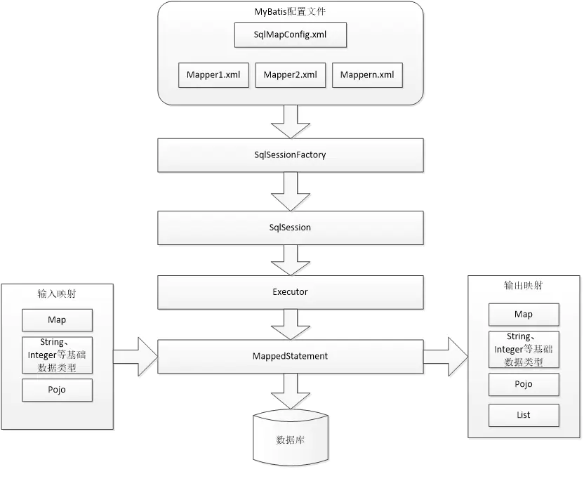

MyBatis 源码

- SqlSession
通过会话工厂创建sqlSession即会话，程序员通过sqlsession会话接口对数据库进行增删改查操作。
MappedStatement
它是mybatis一个底层封装对象，它包装了mybatis配置信息及sql映射信息等。mapper.xml文件中一个select\insert\update\delete标签对应一个Mapped Statement对象，select\insert\update\delete标签的id即是Mapped statement的id。
Mapped Statement对sql执行输入参数进行定义，包括HashMap、基本类型、pojo，Executor通过MappedStatement在执行sql前将输入的java对象映射至sql中，输入参数映射就是jdbc编程中对preparedStatement设置参数。
Mapped Statement对sql执行输出结果进行定义，包括HashMap、基本类型、pojo，Executor通过MappedStatement在执行sql后将输出结果映射至java对象中，输出结果映射过程相当于jdbc编程中对结果的解析处理过程。
Executor
MyBatis执行器，是MyBatis 调度的核心，负责SQL语句的生成和查询缓存的维护
- StatementHandler
装了JDBC Statement操作，负责对JDBC statement 的操作，如设置参数、将Statement结果集转换成List集合。
SpringBoot项目如何使用mybatis的
一个常规的springboot项目整合mybatis如下
- 项目启动类加上了
@MapperScan
@SpringBootApplication
@MapperScan("com.example.demo.repository")
@EnableScheduling
public class DemoApplication {
public static void main(String[] args) {
SpringApplication.run(DemoApplication.class, args);
}
}
- 有model类，Mapper接口和对应的xml文件，xml文件例子如下
<?xml version="1.0" encoding="UTF-8"?>
<!DOCTYPE mapper PUBLIC "-//mybatis.org//DTD Mapper 3.0//EN" "http://mybatis.org/dtd/mybatis-3-mapper.dtd">
<mapper namespace="com.example.demo.repository.mapper.TbUserMapper">
<resultMap id="BaseResultMap" type="com.example.demo.repository.model.TbUser">
<id column="id" jdbcType="INTEGER" property="id" />
<result column="userID" jdbcType="VARCHAR" property="userid" />
<result column="password" jdbcType="VARCHAR" property="password" />
<result column="name" jdbcType="VARCHAR" property="name" />
<result column="phone" jdbcType="VARCHAR" property="phone" />
<result column="address" jdbcType="VARCHAR" property="address" />
</resultMap>
<sql id="Example_Where_Clause">
<where>
<foreach collection="oredCriteria" item="criteria" separator="or">
<if test="criteria.valid">
<trim prefix="(" prefixOverrides="and" suffix=")">
<foreach collection="criteria.criteria" item="criterion">
<choose>
<when test="criterion.noValue">
and ${criterion.condition}
</when>
<when test="criterion.singleValue">
and ${criterion.condition} #{criterion.value}
</when>
<when test="criterion.betweenValue">
and ${criterion.condition} #{criterion.value} and #{criterion.secondValue}
</when>
<when test="criterion.listValue">
and ${criterion.condition}
<foreach close=")" collection="criterion.value" item="listItem" open="(" separator=",">
#{listItem}
</foreach>
</when>
</choose>
</foreach>
</trim>
</if>
</foreach>
</where>
</sql>
<sql id="Update_By_Example_Where_Clause">
<where>
<foreach collection="example.oredCriteria" item="criteria" separator="or">
<if test="criteria.valid">
<trim prefix="(" prefixOverrides="and" suffix=")">
<foreach collection="criteria.criteria" item="criterion">
<choose>
<when test="criterion.noValue">
and ${criterion.condition}
</when>
<when test="criterion.singleValue">
and ${criterion.condition} #{criterion.value}
</when>
<when test="criterion.betweenValue">
and ${criterion.condition} #{criterion.value} and #{criterion.secondValue}
</when>
<when test="criterion.listValue">
and ${criterion.condition}
<foreach close=")" collection="criterion.value" item="listItem" open="(" separator=",">
#{listItem}
</foreach>
</when>
</choose>
</foreach>
</trim>
</if>
</foreach>
</where>
</sql>
<sql id="Base_Column_List">
id, userID, password, name, phone, address
</sql>
<select id="selectByExample" parameterType="com.example.demo.repository.model.TbUserExample" resultMap="BaseResultMap">
select
<if test="distinct">
distinct
</if>
<include refid="Base_Column_List" />
from tb_user
<if test="_parameter != null">
<include refid="Example_Where_Clause" />
</if>
<if test="orderByClause != null">
order by ${orderByClause}
</if>
</select>
<select id="selectByPrimaryKey" parameterType="java.lang.Integer" resultMap="BaseResultMap">
select
<include refid="Base_Column_List" />
from tb_user
where id = #{id,jdbcType=INTEGER}
</select>
<delete id="deleteByPrimaryKey" parameterType="java.lang.Integer">
delete from tb_user
where id = #{id,jdbcType=INTEGER}
</delete>
<delete id="deleteByExample" parameterType="com.example.demo.repository.model.TbUserExample">
delete from tb_user
<if test="_parameter != null">
<include refid="Example_Where_Clause" />
</if>
</delete>
<insert id="insert" parameterType="com.example.demo.repository.model.TbUser">
insert into tb_user (id, userID, password,
name, phone, address
)
values (#{id,jdbcType=INTEGER}, #{userid,jdbcType=VARCHAR}, #{password,jdbcType=VARCHAR},
#{name,jdbcType=VARCHAR}, #{phone,jdbcType=VARCHAR}, #{address,jdbcType=VARCHAR}
)
</insert>
<insert id="insertSelective" parameterType="com.example.demo.repository.model.TbUser">
insert into tb_user
<trim prefix="(" suffix=")" suffixOverrides=",">
<if test="id != null">
id,
</if>
<if test="userid != null">
userID,
</if>
<if test="password != null">
password,
</if>
<if test="name != null">
name,
</if>
<if test="phone != null">
phone,
</if>
<if test="address != null">
address,
</if>
</trim>
<trim prefix="values (" suffix=")" suffixOverrides=",">
<if test="id != null">
#{id,jdbcType=INTEGER},
</if>
<if test="userid != null">
#{userid,jdbcType=VARCHAR},
</if>
<if test="password != null">
#{password,jdbcType=VARCHAR},
</if>
<if test="name != null">
#{name,jdbcType=VARCHAR},
</if>
<if test="phone != null">
#{phone,jdbcType=VARCHAR},
</if>
<if test="address != null">
#{address,jdbcType=VARCHAR},
</if>
</trim>
</insert>
<select id="countByExample" parameterType="com.example.demo.repository.model.TbUserExample" resultType="java.lang.Integer">
select count(*) from tb_user
<if test="_parameter != null">
<include refid="Example_Where_Clause" />
</if>
</select>
<update id="updateByExampleSelective" parameterType="map">
update tb_user
<set>
<if test="record.id != null">
id = #{record.id,jdbcType=INTEGER},
</if>
<if test="record.userid != null">
userID = #{record.userid,jdbcType=VARCHAR},
</if>
<if test="record.password != null">
password = #{record.password,jdbcType=VARCHAR},
</if>
<if test="record.name != null">
name = #{record.name,jdbcType=VARCHAR},
</if>
<if test="record.phone != null">
phone = #{record.phone,jdbcType=VARCHAR},
</if>
<if test="record.address != null">
address = #{record.address,jdbcType=VARCHAR},
</if>
</set>
<if test="_parameter != null">
<include refid="Update_By_Example_Where_Clause" />
</if>
</update>
<update id="updateByExample" parameterType="map">
update tb_user
set id = #{record.id,jdbcType=INTEGER},
userID = #{record.userid,jdbcType=VARCHAR},
password = #{record.password,jdbcType=VARCHAR},
name = #{record.name,jdbcType=VARCHAR},
phone = #{record.phone,jdbcType=VARCHAR},
address = #{record.address,jdbcType=VARCHAR}
<if test="_parameter != null">
<include refid="Update_By_Example_Where_Clause" />
</if>
</update>
<update id="updateByPrimaryKeySelective" parameterType="com.example.demo.repository.model.TbUser">
update tb_user
<set>
<if test="userid != null">
userID = #{userid,jdbcType=VARCHAR},
</if>
<if test="password != null">
password = #{password,jdbcType=VARCHAR},
</if>
<if test="name != null">
name = #{name,jdbcType=VARCHAR},
</if>
<if test="phone != null">
phone = #{phone,jdbcType=VARCHAR},
</if>
<if test="address != null">
address = #{address,jdbcType=VARCHAR},
</if>
</set>
where id = #{id,jdbcType=INTEGER}
</update>
<update id="updateByPrimaryKey" parameterType="com.example.demo.repository.model.TbUser">
update tb_user
set userID = #{userid,jdbcType=VARCHAR},
password = #{password,jdbcType=VARCHAR},
name = #{name,jdbcType=VARCHAR},
phone = #{phone,jdbcType=VARCHAR},
address = #{address,jdbcType=VARCHAR}
where id = #{id,jdbcType=INTEGER}
</update>
<select id="selectByExampleWithRowbounds" parameterType="com.example.demo.repository.model.TbUserExample" resultMap="BaseResultMap">
select
<if test="distinct">
distinct
</if>
<include refid="Base_Column_List" />
from tb_user
<if test="_parameter != null">
<include refid="Example_Where_Clause" />
</if>
<if test="orderByClause != null">
order by ${orderByClause}
</if>
</select>
</mapper>
通常是使用mybatis-generator来自动生成的
- 配置文件要加上数据库配置，也可以自定义Datasource, 一般项目会加上各种starter
spring.datasource.driverClassName=com.mysql.jdbc.Driver
spring.datasource.url=jdbc:mysql://localhost:3306/test?autoReconnect=true&autoReconnectForPools=true&useUnicode=true&characterEncoding=utf-8
spring.datasource.username=root
spring.datasource.password=123456
compile('org.springframework.boot:spring-boot-starter-jdbc')
compile('org.springframework.boot:spring-boot-starter-web')
compile('org.mybatis.spring.boot:mybatis-spring-boot-starter:1.3.2')
使用很简单;原理呢?
通过学习@Configuration,到学习ConfigurationClassPostProcessor这个bfpp，再到@MapperScan的学习到mybatis的org.mybatis.spring.mapper.MapperScannerConfigurer的bfpp，这样mybatis是将Mapper的BeanDefinition注册到spring容器中了
通过springboot的starter的学习，可以知道datasource是如何注入的(通过@Import注解 + 实现ImportSelector接口的方式向IOC容器里注入Bean)